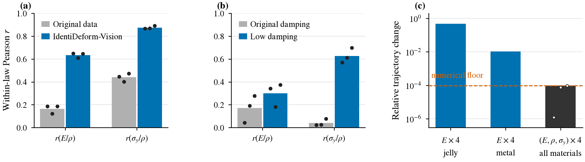
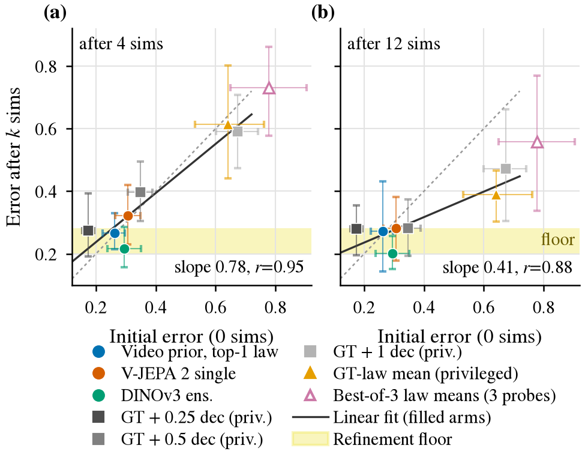
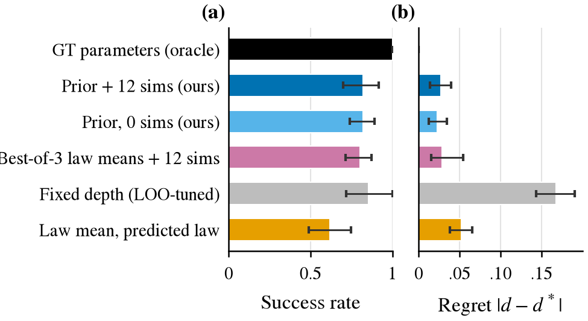

What can a video tell?
IdentiDeform contains MPM simulations of 3D-Gaussian objects under six loading actions, each rendered from three cameras. Jelly, metal and plasticine, with E/ρ and σy/ρ spanning several decades.
Press plasticine
Drop metal
Shear jelly
Stretch jelly
Bend jelly
Press–hold–release jelly
Each clip shows three camera views of one validation sample (4 s, cropped to the object).
Differences within one class are visible
Below, the same object and material class get the same action, but E/ρ differs by more than one decade. The two motions look clearly different. On earlier benchmarks, heavy damping and weak excitation hid such differences.
Drop · jelly bottle
log10E/ρ = 2.95
log10E/ρ = 4.16
Shear · jelly tray
log10E/ρ = 2.34
log10E/ρ = 3.67
Each half shows two camera views. E/ρ is given in specific units, E/(ρ/1000).
…but density is not

Prior + few simulations
The video prior gives an initial guess in about 6 s. Gradient-free simulation-in-the-loop refinement then fits the observed video. The error after refinement is close to linear in the starting error, so a better start reaches the refinement floor with fewer simulations.

Each point is one initialization, including the video prior, class means and ground truth plus noise. After 12 simulations every good start ends near the same floor. The prior's value is that it starts close to that floor without running any simulation.
Using the twin: damage-aware grasp
A parallel-jaw gripper squeezes the object, holds, and releases. Each twin simulates six candidate depths and picks the deepest one whose predicted permanent crush stays within 3% of the object's width. We then run the chosen depth with the ground-truth material.
Plasticine bottle (#182) deepest safe depth: d = 0.18
Metal boot (#181) deepest safe: d = 0.14
Plasticine, sample #71 deepest safe: d = 0.24
Side view of 4,096 tracked MPM particles under ground-truth execution. Blue bars are the jaws. Grey dashed lines mark the initial width and the coloured ticks mark the current width. "Ours" means the video prior followed by 12 refinement simulations. The task runs with gravity off.

Comparison
Per-scene system identification costs hours. The prior is a single forward pass.
| Method | Input | Time / scene |
|---|---|---|
| PAC-NeRF | 11 views | 5.8 h |
| Spring-Gaus | 10 views | 2.4–5.1 h |
| PhysTwin | 3 RGB-D | 31 min |
| Ours, prior only | 3 views | 6 s |
Official implementations on their own data, timed on shared GPUs (upper bounds). These methods differ in input and output, so the table compares cost only. On PAC-NeRF scenes our prior needs a 3-scene calibration to match their accuracy (see paper).

Limitations
- Simulation only. All quantitative results come from simulated videos with known ground truth. The real-object checks in the paper are small and qualitative.
- Refinement floor. Refinement plateaus at a z-MAE of about 0.2–0.3, set by parameters we do not model (e.g. hardening). The prior helps you reach the floor quickly but does not lower it.
- Zero-shot transfer across datasets is unreliable. On PAC-NeRF and Spring-Gaus data the prior needs in-target calibration or refinement.
BibTeX
@inproceedings{identideform2026,
title = {What Can a Video Tell About Material? Identifiable Video Priors
for Few-Simulation System Identification},
author = {Anonymous},
booktitle = {Under review},
year = {2026}
}